Run a Genetic Algorithm to optimize a wind farm layout
genetic_algorithm.RdRun a Genetic Algorithm to optimize the layout of wind turbines on a given area. The algorithm works with a fixed amount of turbines, a fixed rotor radius and a mean wind speed value for every incoming wind direction.
genetic_algorithm(Polygon1, GridMethod, Rotor, n, fcrR, referenceHeight, RotorHeight, SurfaceRoughness, Proportionality, iteration, mutr, vdirspe, topograp, elitism, nelit, selstate, crossPart1, trimForce, Projection, sourceCCL, sourceCCLRoughness, weibull, weibullsrc, Parallel, numCluster, verbose = FALSE, plotit = FALSE)
Arguments
| Polygon1 | The considered area as SpatialPolygon, SimpleFeature Polygon or coordinates as matrix/data.frame |
|---|---|
| GridMethod | Should the polygon be divided into rectangular or hexagonal grid cells? The default is "Rectangular" grid cells and hexagonal grid cells are computed when assigning "h" or "hexagon" to this input variable. |
| Rotor | A numeric value that gives the rotor radius in meter |
| n | A numeric value indicating the required amount of turbines |
| fcrR | A numeric value that is used for grid spacing. Default is 5 |
| referenceHeight | The height at which the incoming wind speeds were measured. Default is the RotorHeight. |
| RotorHeight | The desired height of the turbine. |
| SurfaceRoughness | A surface roughness length of the considered area in m. If the terrain effect model is activated, a surface roughness will be calculated for every grid cell with the elevation and land cover information. Default is 0.3 |
| Proportionality | A numeric value used for grid calculation. Determines the percentage a grid has to overlay. Default is 1 |
| iteration | A numeric value indicating the desired amount of iterations of the algorithm. Default is 20 |
| mutr | A numeric mutation rate with a default value of 0.008 |
| vdirspe | A data.frame containing the incoming wind speeds, wind directions and probabilities |
| topograp | Logical value, which indicates if the terrain effect model should be enabled or not. Default is FALSE |
| elitism | Boolean value, which indicates whether elitism should be activated or not. Default is TRUE |
| nelit | If |
| selstate | Determines which selection method is used, "FIX" selects a constant percentage and "VAR" selects a variable percentage, depending on the development of the fitness values. Default is "FIX" |
| crossPart1 | Determines which crossover method is used, "EQU" divides the genetic code at equal intervals and "RAN" divides the genetic code at random locations. Default is "EQU" |
| trimForce | If activated ( |
| Projection | A desired Projection can be used instead of the default Lambert Azimuthal Equal Area Projection (EPSG:3035). |
| sourceCCL | The path to the Corine Land Cover raster (.tif). Only required when the terrain effect model is activated. If nothing is assign, it will try to download a version from the EEA-website. |
| sourceCCLRoughness | The source to the adapted Corine Land Cover legend
as .csv file. Only required when terrain effect model is activated. As
default a .csv file within this package ( |
| weibull | A logical value that specifies whether to take Weibull parameters into account. If `weibull == TRUE`, the wind speed values from the `vdirspe` data frame are ignored. The algorithm will calculate the mean wind speed for every wind turbine according to the Weibull parameters. Default is FALSE |
| weibullsrc | A list of Weibull parameter rasters, where the first list item must be the shape parameter raster `k` and the second item must be the scale parameter raster `a` of the Weibull distribution. If no list is given, then rasters included in the package are used instead, which currently only cover Austria. This variable is only used if `weibull == TRUE`. |
| Parallel | Boolean value, indicating whether parallel processing should be used. The parallel and doParallel packages are used for parallel processing. Default is FALSE |
| numCluster | If |
| verbose | If TRUE it will print information for every generation. Default is FALSE |
| plotit | If TRUE it will plot the best windfarm of every generation. Default is FALSE |
Value
The result is a matrix with aggregated values per generation, the best individual regarding energy and efficiency per generation, some fuzzy control variables per generation, a list of all fitness values per generation, the amount of individuals after each process, a matrix of all energy, efficiency and fitness values per generation, the selection and crossover parameters, a matrix with the generational difference in maximum and mean energy output, a matrix with the given inputs, a dataframe with the wind information, the mutation rate per generation and a matrix with all tested wind farm layouts.
Details
A terrain effect model can be included in the optimization process.
Therefore, an SRTM elevation model will be downloaded automatically via the
raster::getData function. A land cover raster can also be downloaded
automatically from the EEA-website, or the path to a raster file can be
passed to sourceCCL. The algorithm uses an adapted version of the
Raster legend ("clc_legend.csv"), which is stored in the package directory
~/inst/extdata. To use other values for the land cover roughness
lengths, insert a column named "Rauhigkeit_z" to the .csv file,
assign a surface roughness length to all land cover types. Be sure that all
rows are filled with numeric values and save the file with ";"
separation. Assign the path of the file to the input variable
sourceCCLRoughness of this function.
See also
Other Genetic Algorithm Functions: crossover,
fitness, init_population,
mutation, selection,
trimton, windfarmGA
Examples
## Create a random rectangular shapefile library(sp) Polygon1 <- Polygon(rbind(c(4498482, 2668272), c(4498482, 2669343), c(4499991, 2669343), c(4499991, 2668272))) Polygon1 <- Polygons(list(Polygon1), 1); Polygon1 <- SpatialPolygons(list(Polygon1)) Projection <- "+proj=laea +lat_0=52 +lon_0=10 +x_0=4321000 +y_0=3210000 +ellps=GRS80 +towgs84=0,0,0,0,0,0,0 +units=m +no_defs" proj4string(Polygon1) <- CRS(Projection) ## Create a uniform and unidirectional wind data.frame and plot the ## resulting wind rose data.in <- data.frame(ws = 12, wd = 0) windrosePlot <- plot_windrose(data = data.in, spd = data.in$ws, dir = data.in$wd, dirres=10, spdmax=20)## Runs an optimization run for 20 iterations with the ## given shapefile (Polygon1), the wind data.frame (data.in), ## 12 turbines (n) with rotor radii of 30m (Rotor) and rotor height of 100m. result <- genetic_algorithm(Polygon1 = Polygon1, n = 12, vdirspe = data.in, Rotor = 30, RotorHeight = 100)#> ....................plot_windfarmGA(result = result, Polygon1 = Polygon1)#> [1] "plot_result: Plot the 'best' Individuals of the GA:" #> N different optimal configurations: 13 #> Amount duplicates: 7 #> Plot 1 Best Energy Solution: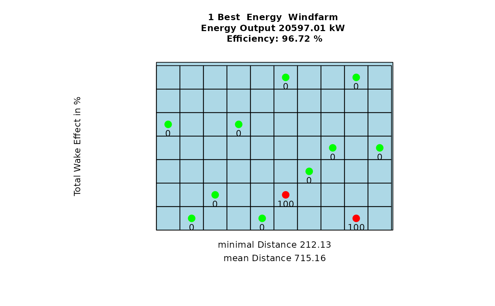#> Press [enter] to continue #> [1] "plot_evolution: Plot the Evolution of the Efficiency and Energy Values:"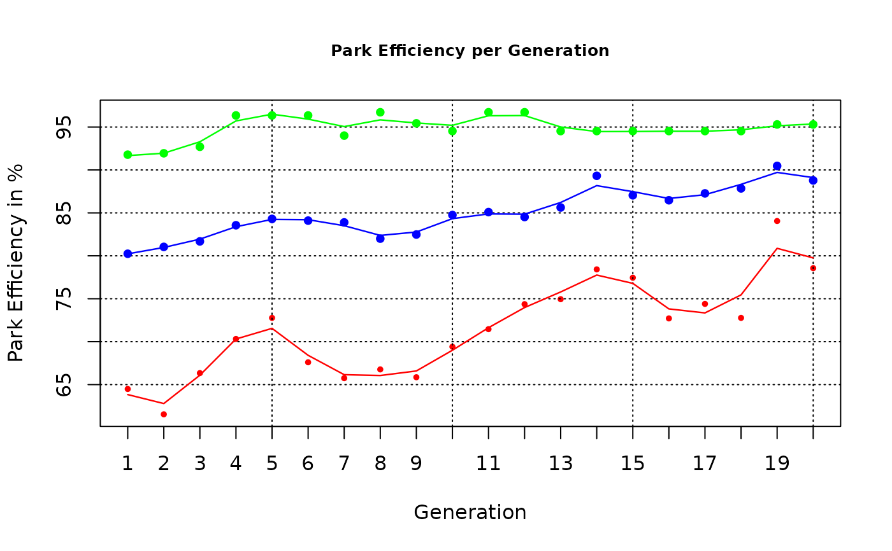#> [1] "plot_parkfitness: Plot the Influence of Population Size, Selection, Crossover, Mutation:"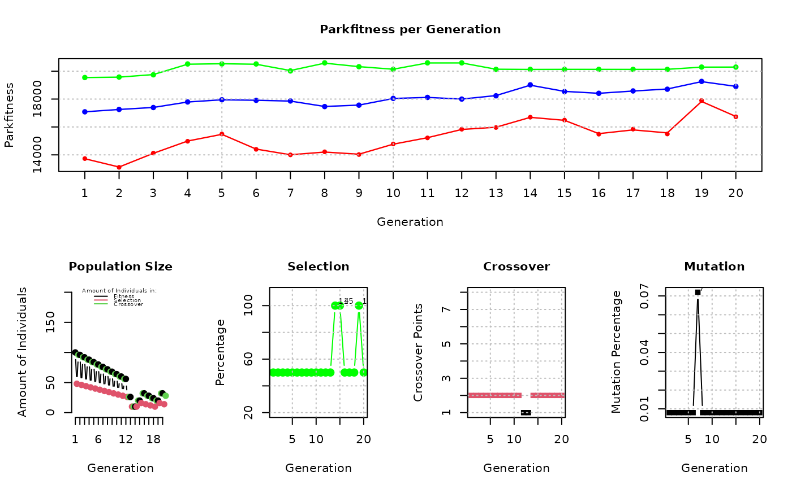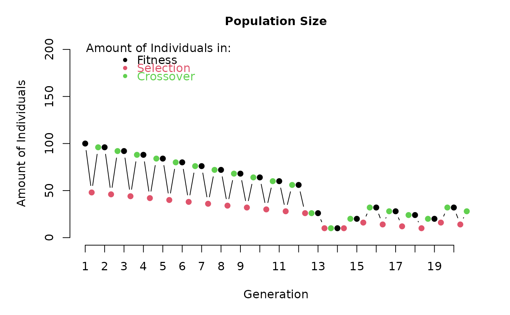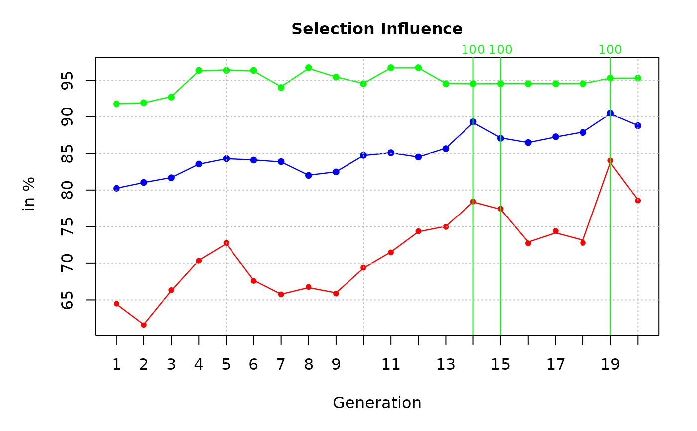#> Press [enter] to continue #> [1] "plot_fitness_evolution: Plot the Changes in Fitness Values:"#> Press [enter] to continue #> [1] "plot_cloud: Plot all individual Values of the whole Evolution:"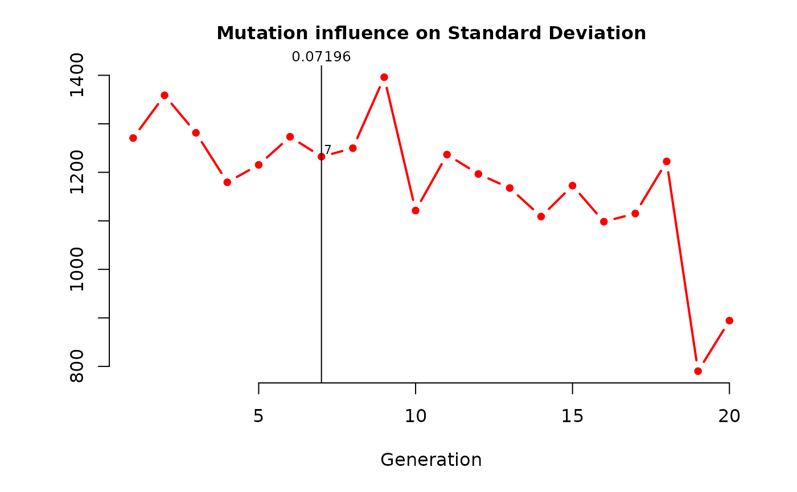#> Press [enter] to continue #> [1] "plot_heatmap: Plot a Heatmap of all Grid Cells:" #> [inverse distance weighted interpolation]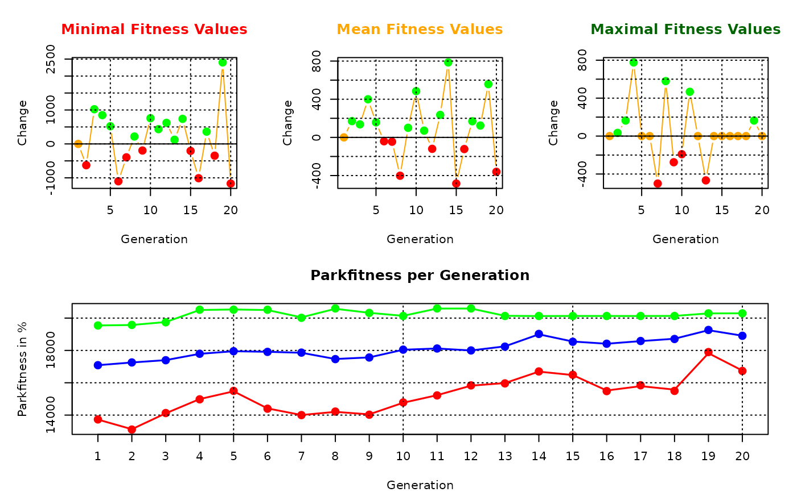#> NULL## Runs the same optimization, but with parallel processing and 3 cores. result_par <- genetic_algorithm(Polygon1 = Polygon1, GridMethod ="h", n=12, Rotor=30, fcrR=5,iteration=10, vdirspe = data.in,crossPart1 = "EQU", selstate="FIX",mutr=0.8, Proportionality = 1, SurfaceRoughness = 0.3, topograp = FALSE, elitism=TRUE, nelit = 7, trimForce = TRUE, referenceHeight = 50,RotorHeight = 100, Parallel = TRUE, numCluster = 3)#> .#> Error in { windfarmGA::calculate_energy(sel = selection[[k]], referenceHeight = referenceHeight, RotorHeight = RotorHeight, SurfaceRoughness = SurfaceRoughness, wnkl = 20, distanz = 1e+05, polygon1 = Polygon, resol = resol1, RotorR = rot, dirSpeed = dirspeed, srtm_crop = srtm_crop, topograp = topograp, cclRaster = cclRaster, weibull = weibull)}: task 1 failed - "there is no package called ‘windfarmGA’"plot_windfarmGA(result = result_par, GridMethod = "h", Polygon1 = Polygon1)#> Error in plot_windfarmGA(result = result_par, GridMethod = "h", Polygon1 = Polygon1): object 'result_par' not found## Runs the same optimization, this time with hexagonal grids. result_hex <- genetic_algorithm(Polygon1 = Polygon1, GridMethod ="h", n=12, Rotor=30, fcrR=5,iteration=10, vdirspe = data.in,crossPart1 = "EQU", selstate="FIX",mutr=0.8, Proportionality = 1, SurfaceRoughness = 0.3, topograp = FALSE, elitism=TRUE, nelit = 7, trimForce = TRUE, referenceHeight = 50,RotorHeight = 100)#> ..........plot_windfarmGA(result = result_hex, GridMethod = "h", Polygon1 = Polygon1)#> [1] "plot_result: Plot the 'best' Individuals of the GA:" #> N different optimal configurations: 10 #> Amount duplicates: 0 #> Plot 1 Best Energy Solution:#> Press [enter] to continue #> [1] "plot_evolution: Plot the Evolution of the Efficiency and Energy Values:"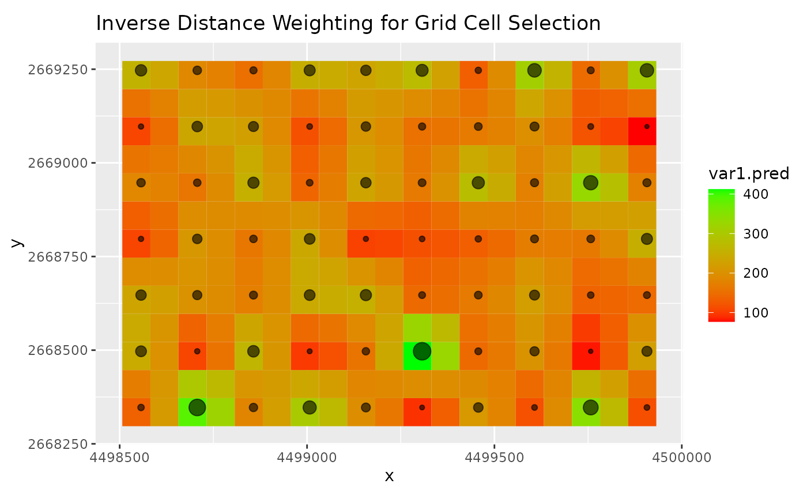#> [1] "plot_parkfitness: Plot the Influence of Population Size, Selection, Crossover, Mutation:"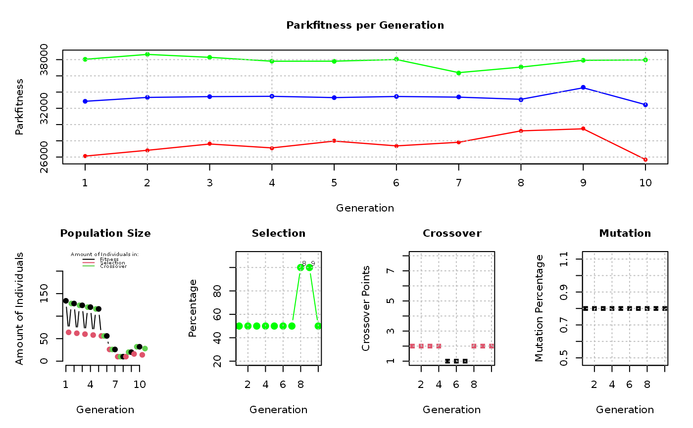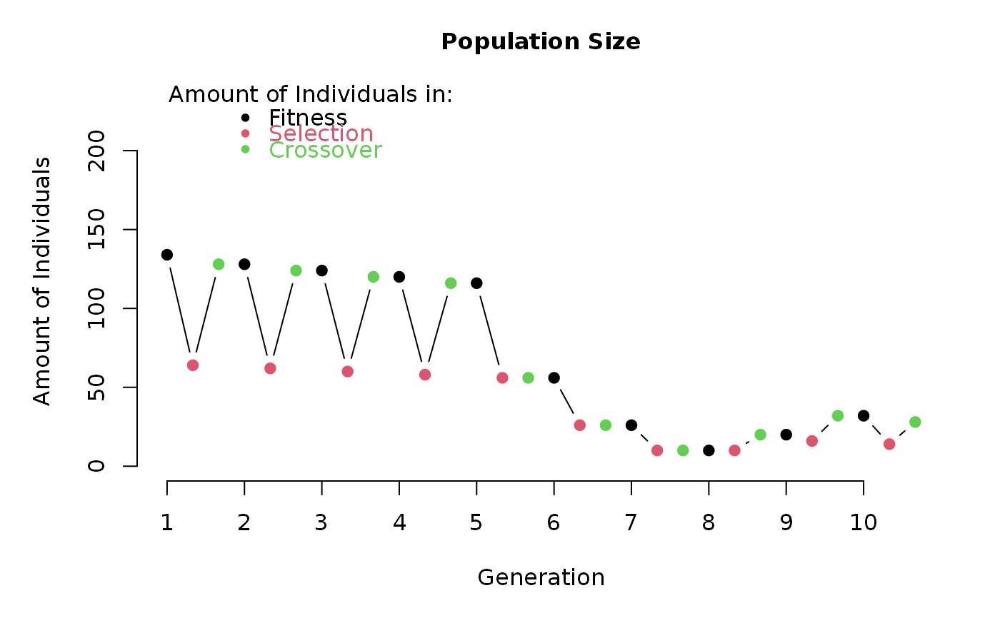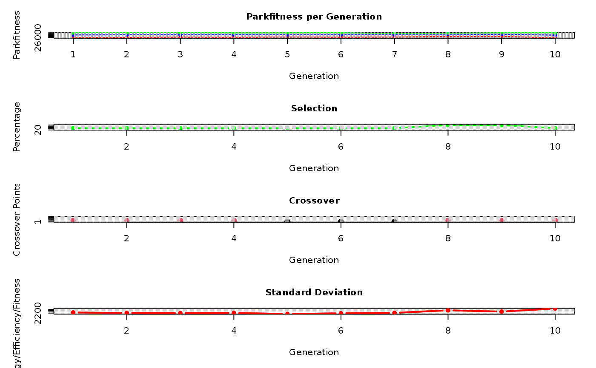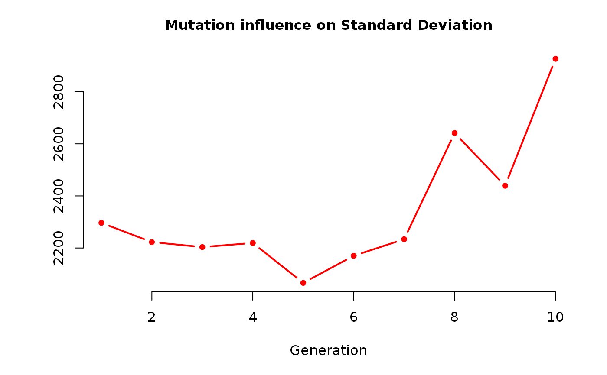#> Press [enter] to continue #> [1] "plot_fitness_evolution: Plot the Changes in Fitness Values:"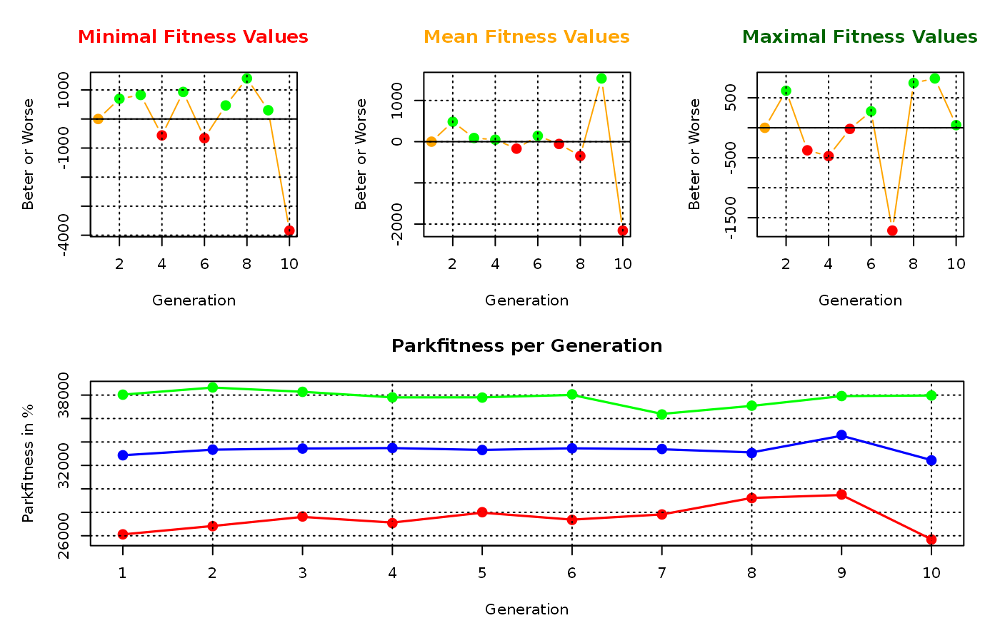#> Press [enter] to continue #> [1] "plot_cloud: Plot all individual Values of the whole Evolution:"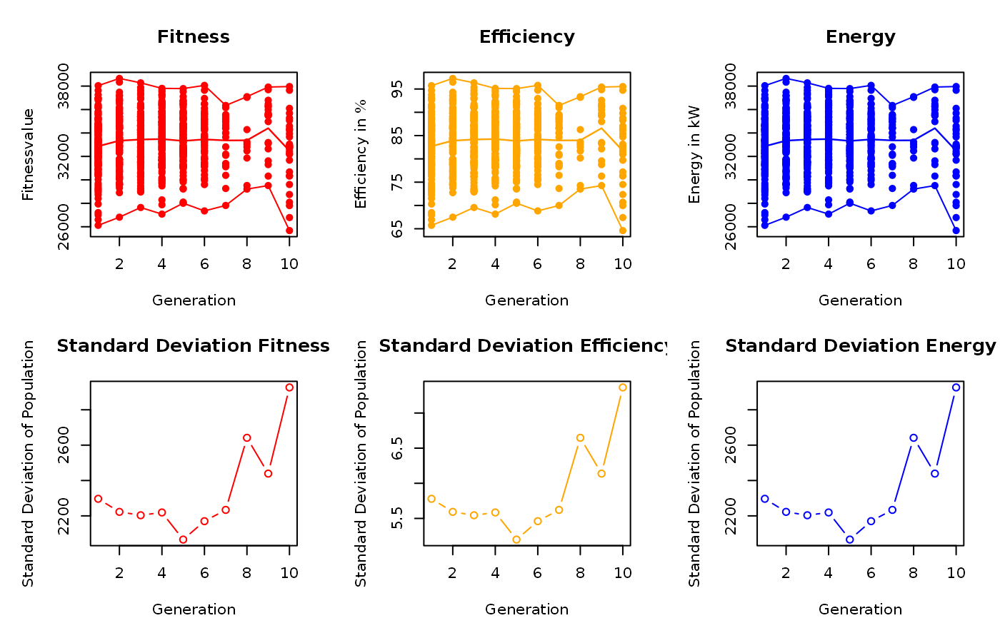#> Press [enter] to continue #> [1] "plot_heatmap: Plot a Heatmap of all Grid Cells:" #> [inverse distance weighted interpolation]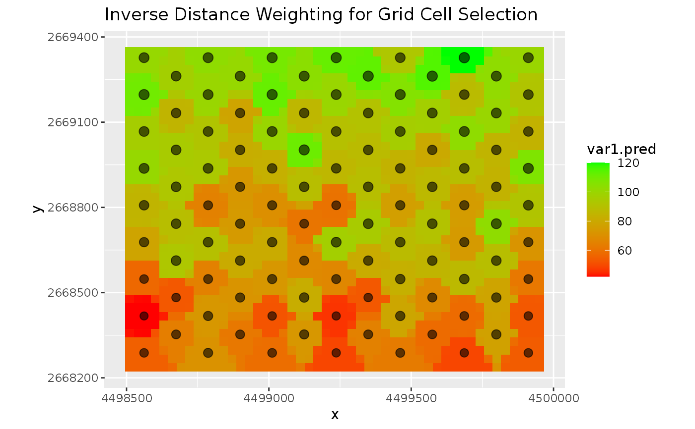#> NULL## Run an optimization with the Weibull parameters included in the package. result_weibull <- genetic_algorithm(Polygon1 = Polygon1, GridMethod ="h", n=12, fcrR=5,iteration=10, vdirspe = data.in,crossPart1 = "EQU", selstate="FIX",mutr=0.8, Proportionality = 1, Rotor=30, SurfaceRoughness = 0.3, topograp = FALSE, elitism=TRUE, nelit = 7, trimForce = TRUE, referenceHeight = 50,RotorHeight = 100, weibull = TRUE)#> ..........plot_windfarmGA(result = result_weibull, GridMethod= "h", Polygon1 = Polygon1)#> [1] "plot_result: Plot the 'best' Individuals of the GA:" #> N different optimal configurations: 10 #> Amount duplicates: 0 #> Plot 1 Best Energy Solution: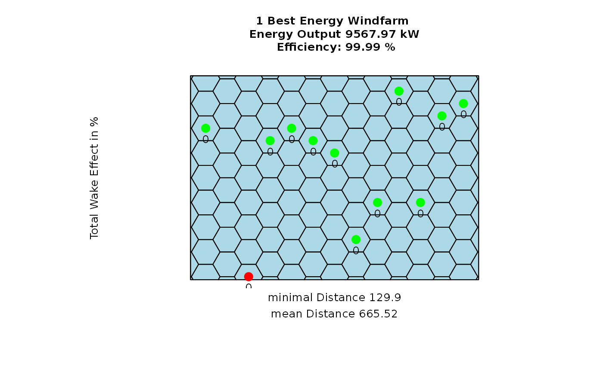#> Press [enter] to continue #> [1] "plot_evolution: Plot the Evolution of the Efficiency and Energy Values:"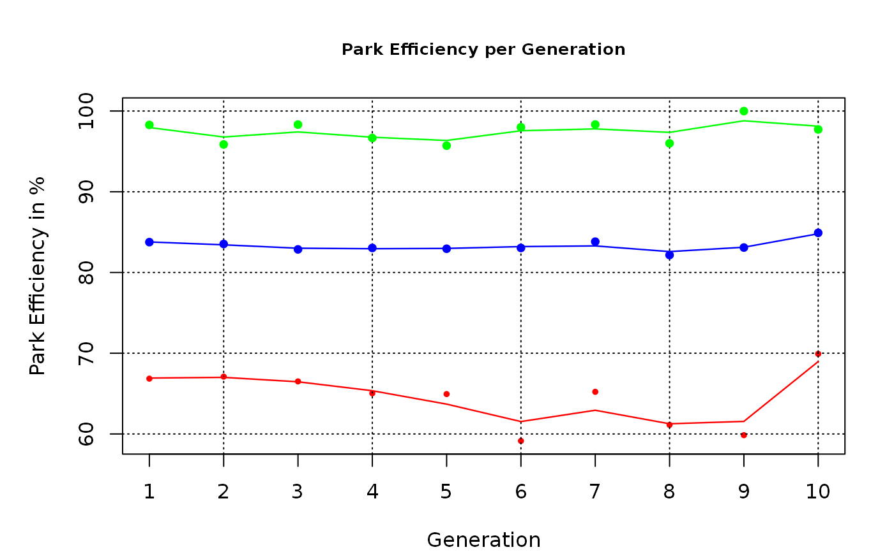#> [1] "plot_parkfitness: Plot the Influence of Population Size, Selection, Crossover, Mutation:"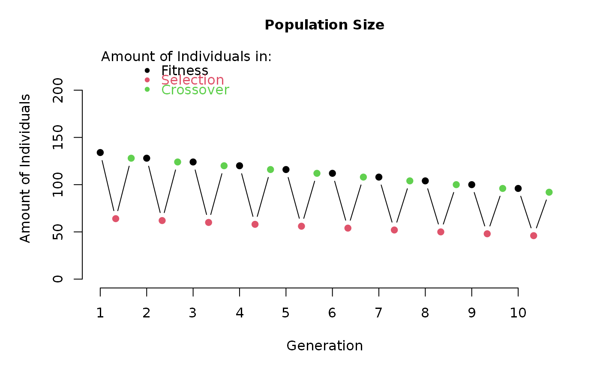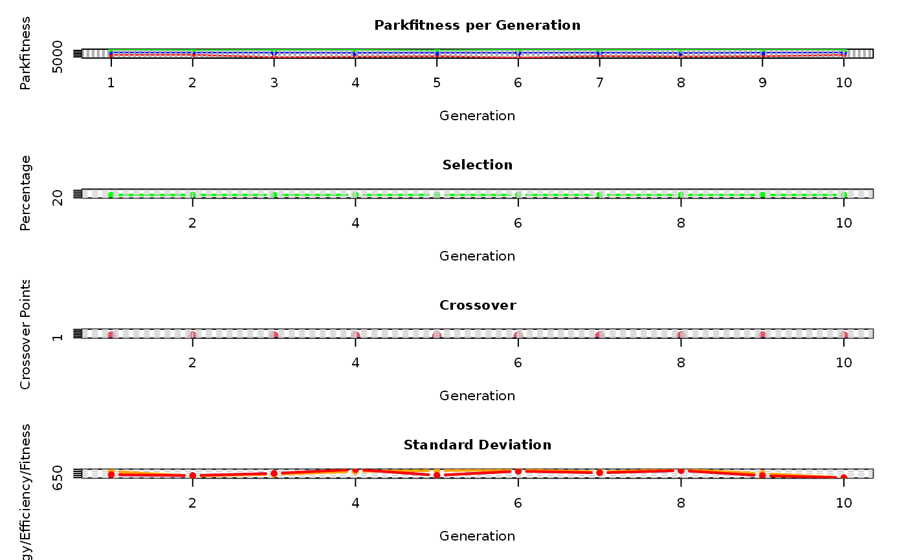#> Press [enter] to continue #> [1] "plot_fitness_evolution: Plot the Changes in Fitness Values:"#> Press [enter] to continue #> [1] "plot_cloud: Plot all individual Values of the whole Evolution:"#> Press [enter] to continue #> [1] "plot_heatmap: Plot a Heatmap of all Grid Cells:" #> [inverse distance weighted interpolation]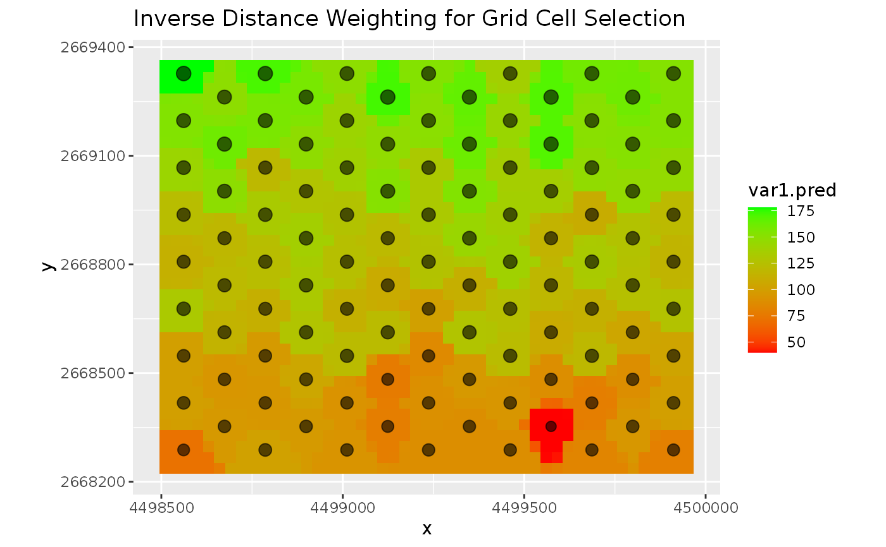#> NULL## Run an optimization with given Weibull parameter rasters. #araster <- "/..pathto../a_param_raster.tif" #kraster <- "/..pathto../k_param_raster.tif" #weibullrasters <- list(raster(kraster), raster(araster)) #result_weibull <- genetic_algorithm(Polygon1 = Polygon1, GridMethod ="h", n=12, # fcrR=5,iteration=10, vdirspe = data.in,crossPart1 = "EQU", # selstate="FIX",mutr=0.8, Proportionality = 1, Rotor=30, # SurfaceRoughness = 0.3, topograp = FALSE, # elitism=TRUE, nelit = 7, trimForce = TRUE, # referenceHeight = 50,RotorHeight = 100, # weibull = TRUE, weibullsrc = weibullrasters) #plot_windfarmGA(result = result_weibull, GridMethod= "h", Polygon1 = Polygon1)